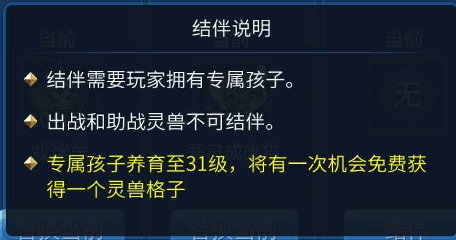
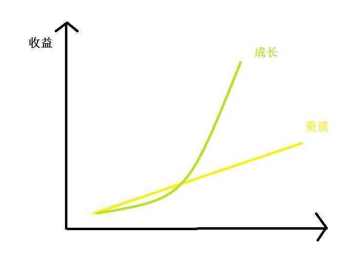
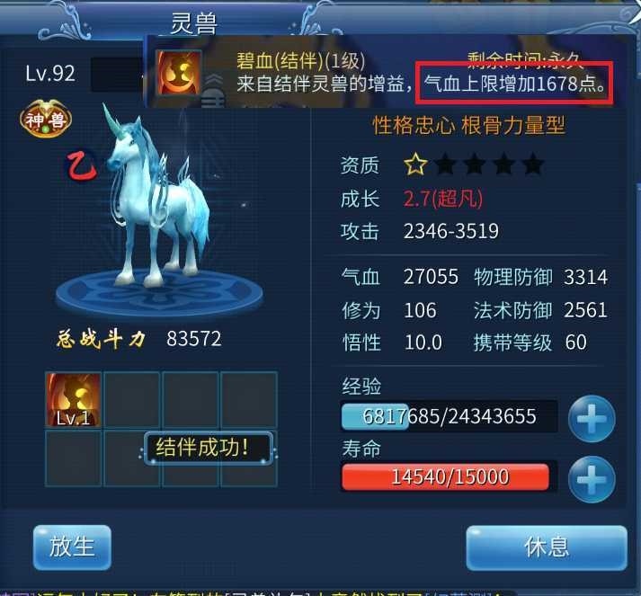

结伴灵兽成长与资质
作者：[小黑猪]
第一个需要注意的点
出战或者助战的灵兽不能用于结伴!

不少人都还在问小编是不是要再弄只灵兽，可不可以跟助战或者出战结伴之类的问题，上面那个图也看到了，肯定是不能的! 想要打结伴技能，一只空闲的灵兽和你家的娃缺一不可。 第二个需要注意的点
普通结伴技能，只受灵兽资质、成长、亲密度和结伴技能的等级影响;职业结伴技能，只受结伴技能的等级和你家娃的气场品质影响。
仔细读小编的这句话…… 首先可以确定灵兽自己的等级，完全不影响结伴技能的效果!所以，60级能提升悟性、修为就足够了。 其次，提升悟性、修为因为提升了灵兽的资质，所以肯定对结伴技能是有一定效果的。但效果好不好，本文后面会讲到。 第三个需要注意的点
普通结伴技能需要冲格子，而职业结伴技能不需要冲格子。
但是吧，打技能之前，还是想清楚先，一旦打错，想要换掉某个技能，是没有什么好办法的。只能够锁住1个技能，然后拼波运气，看能不能顶掉自己不想要的技能。
特别是对于职业结伴技能来说，很多职业结伴技能描述写得天花乱坠，结果并没有什么效果;有些职业结伴技能看着没啥用，性价比却贼高。
简单介绍完机制，咱们就进入小编这两天测试的主题：资质、成长、亲密度是怎样作用于小编们的结伴技能的，到底结伴灵兽选什么好? 数据小编就不发了，后面会附上一些灵兽的图及其效果图
直接说结论
结论1：资质、成长、亲密度三者之中，成长的效果最为明显;且成长的数值越高，收益的增长率越大(类似于二次函数型增长)。 小编手绘了个一个草图，来大致表示资质与成长的一个关系。简单说来就是，成长越极限，收益越大 
小编再附上两只灵兽图，可以看到1.45成长4星半资质悟性10亲密0修为120的甲级血宝宝，提升的血量没有拼过2.7成长半星资质悟性10亲密0修为106的乙级血宝宝

结论2：资质、成长、亲密度的效果，都是单独的，分开的。也就是说，小编提升资质，不会提升由成长、亲密度带来的效果;同样的小编提升成长，也不会提升资质、亲密度带来的效果。
结论3：结伴技能等级的提升，会同时提升资质、成长、亲密度等提升的效果。
所以综上所述，有以下几点：
- 成长的效果非常突出，而且考虑到，你所选择的技能通常要求多种资质，在此极力推荐高成长的灵兽，很多乙级、丙级、丁级高成长的灵兽，效果甚至比甲级、乙级高资质的还好。
- 结伴技能存在有等级上的效果压制，但这压制体现在结伴技能等级方面。卡级玩家，由于等级限制，只能将结伴技能提升到某一等级，而这技能等级差带来的不只是技能等级之间本身的差距，同时还会被资质、成长、亲密度等三个因素给放大，导致较大的差距。所以，提升技能等级也十分重要。
- 悟性、修为、亲密度，这三者在结伴技能等级较低的情况下，提升的效果，非常有限。所以请各位根据自己的投入，来判断回报。